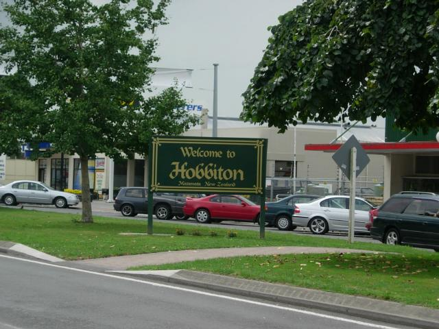
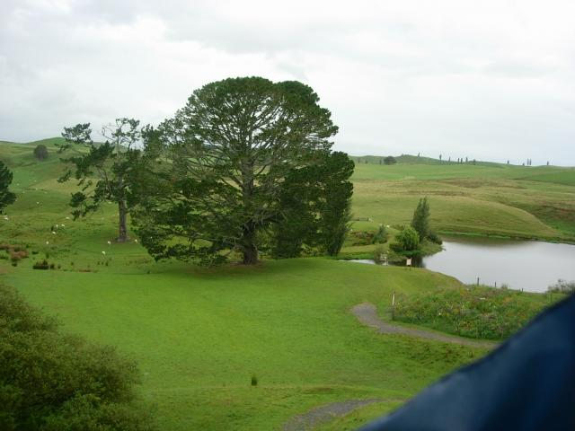
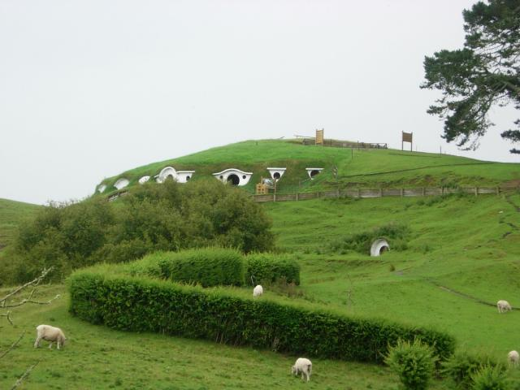
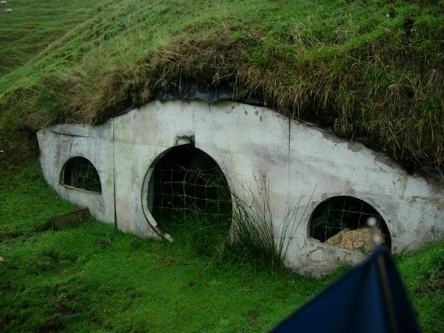
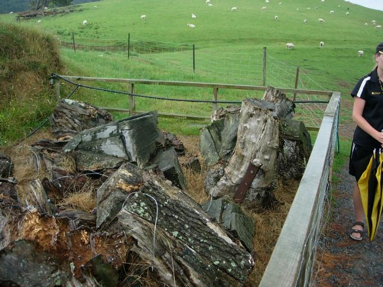
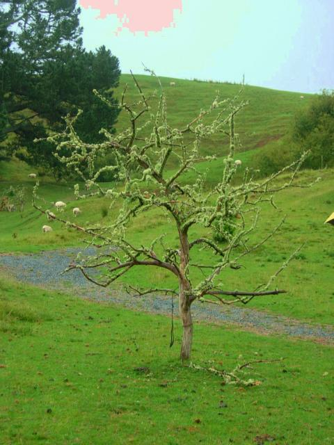
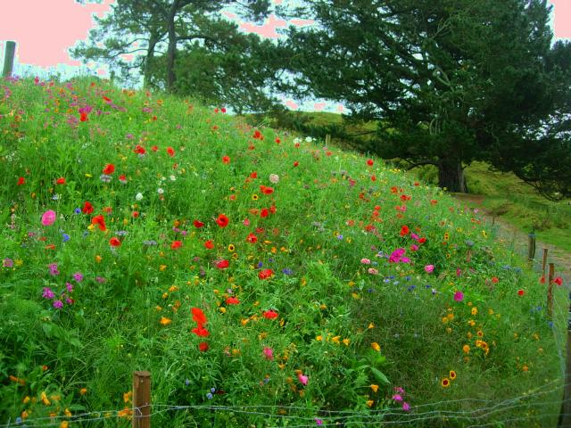
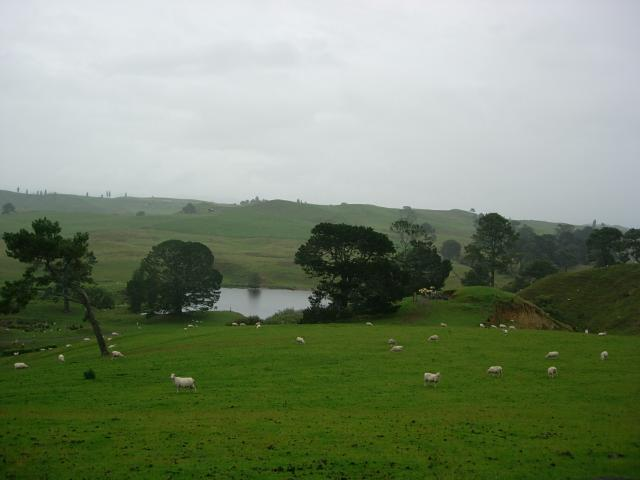
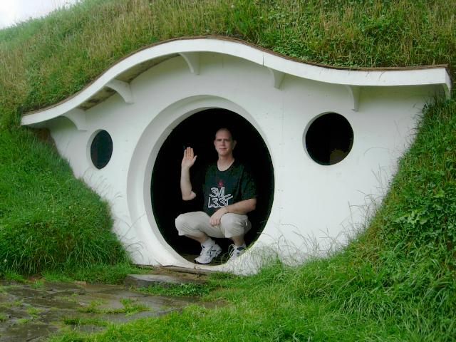

Hobbiton

Hobbiton is the Alexander family sheep farm 20 minutes outside of the farming town of Matamata. (I was able to startle the tour guide by telling her what it means in Spanish.) Peter Jackson (PJ) discovered the site on an arial survey. The survey didn't show that the farm is on Buckland Rd.
Matamata has an extroardinary vibration, great peace and reassurance. "Relax. You're safe now. Nothing bad will ever happen to you again." The only place I've felt anything like this is small town central Utah.
The contract between the Alexanders and New Line stipulated that the set be returned to its natural state after filming. I asked about this. The guide said most filming was done on national parks, and it was a standard clause in the contract. The Green Dragon Inn was burned down to create the scene in Galadriel's mirror. The rest of the set was being demolished when rain intervened. Meanwhile, the Alexander family was being peppered with people asking to see the site, and realized it had a gold mine. It asked New Line to amend the contract, which was done after atwo year delay. The contract now stipulates that the Alexanders can do nothing to undo the demolition.

Party field and tree
PJ contracted the New Zealand army to build a road to the shooting site. They also created the Party Field, which was previously part of a swamp, at the level of the lake. The Alexanders had signed a secrecy agreement, so they told the neighbors that the Army was holding exercises on their property.
The fireworks were dummies containing electric lanterns so they would glow. They were launched about 30' in the air using compressed springs. The crew swept a broom over Merry and Pippin's heads to give them something to duck from as the dragon passed overhead. The Alexanders watched this, and were really puzzled by the actors screaming about the broom, until they saw the film. (They had never heard of the book.)
Asked the guide about the story that a car appears in the first theatrical version of the Hobbiton footage. She says she never saw a car, but at the point where Sam says "If I take one more step, I'll be further from the Shire than I've ever been", the camera panned in an unusual direction, toward the dirt road, to get new scenery. There was a puff of dust that must have been a car. She thought it was from the Green Dragon, which used beeswax pots to generate smoke, but remembered that in the story line, they were four days from the Shire. In subsequent versions, it's disappeared.

Hobbiton
Bilbo's gate is visible to the right of the hedge, with Bag End to the left. The Alexanders "for safety reasons" painted the fading sets white to prevent further weathering. The hedge is not native to New Zealand, and is a thorny nuisance to sheep farmers. PJ planted it because it grows in England.

This is the one hole that has not been painted. Traces of the original paint are visible, along with the glue (grey patches to left) that held on the trim.
Dailies were flown to Wellington for processing and back up. One scene was shot 25 times before PJ was happy (don't remember which it was). PJ and the producer offered a neighbor a 4-month vacation anywhere in New Zealand in return for the use of the house. PJ and Osbourn set up shop there.

The book mentions an oak tree overhanging Bag End. PJ found an oak he liked, had it disassembled into numbered parts, and reassembled on the set. Artificial oak leaves were flown in from Taiwan and glued to the gree. The hobbit's garden was actually grown in Wellington, ripped out, replanted, and filmed before it could wither.

This is another example of PJ perfectionism. The appendices to LOTR mention plum trees in the Shire. Alas, the foliage on plums starts so high that it wouldn't show from a hobbit's camera angle. These are apple trees that had plum leaves and fruit wired on.

Other perfectionistic touches: English sheep have black faces and hooves, so PJ brought some in. The ducks on the lake were New Zealand ducks, not English. He scared off the native ducks and put English ducks in the pond (according to the tour guide, they never appeared in the film). The Alexander family planted a Hobbiton flower garden "as a memorial" to the film. They couldn't legally put it near any of the structures.
At peak, there were 400 people on-site. Extras were recruited from all over New Zealand. Auditions were held at Matamata's high school. A few locals made the cut, which included height restriction. Their ages ranged from 4 to 86. They refer to themselves as "the chosen few".
The Alexanders had a standing invitation to dine with the crew, and they say the food was equal to the best restaraunts in New Zealand.

The bridge over which Gandalf rode was at the right side of the lake. Only the front side and right end of the bridge were actually built out. No one was sure the bridge would take human weight until 80-year-old Ian Alexander returned from a trip, noticed the bridge and walked across it. The crew kept trying to wave him off the bridge. Ian smiled and waved back.

Greetings from Bag End.
Actually, the actors were never filmed entering or exiting this structure. Two others were built in Wellington--a regular sized one to fit Frodo and a small one to make Gandalf stoop walking in.